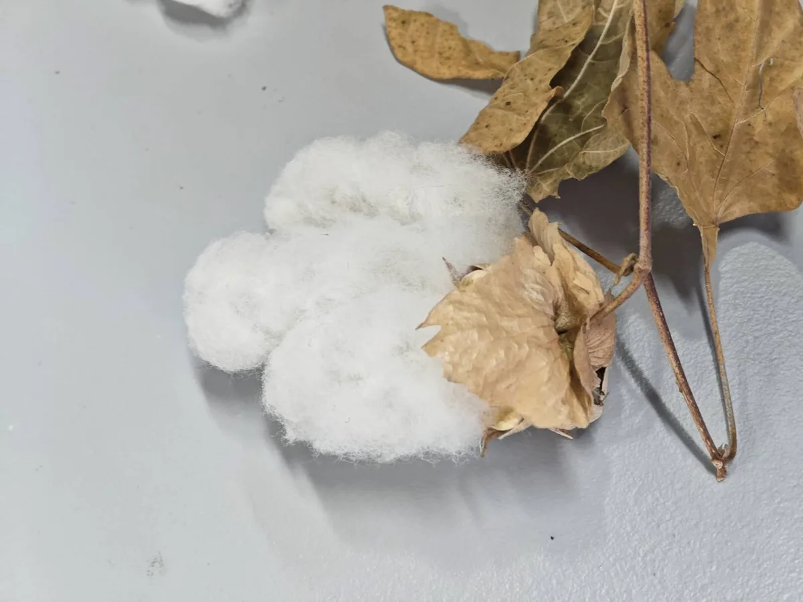

植物班紹介
中学三年 三井田 一
1.植物班について
「生物園芸部」だというのに、園芸要素がない。そう思った部員たちが、今年度から新たに創設し、活動を行っている班です。毎日、班員が植物の育成に奮闘しております。
育てている植物たちを紹介します。
・稲 学名:Oryza sativa
イネ科イネ属の植物です。
早稲田といえば稲。そう思って育て始めました。発泡スチロールで田んぼを作り、育てています。日本の主食といえる稲ですが、間近で見たことのある人は少ないと思います。じっくり見てみてください。また、発泡スチロールの中を覗くと、何かいるかも?
・オボロヅキ 学名:Graptopetalum paraguayense
ベンケイソウ科グラプトペタルム属の多肉植物です。メキシコ原産とされ、観賞用植物として広く栽培されています。
・綿花 学名:Gossypium
アオイ科ワタ属の植物です。
人類の衣類の歴史を語る上では欠かせない綿花。紀元前 2500 年頃から、古代インダス地方(現在のインド周辺)で繊維作物として栽培されていたといわれています。展示中のものは、ワタ状の実をつけていると思います。
花言葉は「優秀」。受験生の皆さん、頑張ってください。
・マングローブ
マングローブとは特定の植物ではなく、熱帯・亜熱帯地域の汽水域などに生育する植物の総称です。
植物班では、ヤエヤマヒルギという植物を育てています。ヤエヤマヒルギの学名はRhizophora stylosa です。大きくなった姿が楽しみです。いかがでしょうか。植物班では、ここでは紹介できていない魅力的な植物たちがまだいます。身近にいるけれど、あまり意識しない植物たち。今回の展示で、その魅力を感じていただけたらと思います。

参考文献
熊本大学薬学部 (https://www.pharm.kumamoto-u.ac.jp/yakusodb/detail/006438.php)
季節の花 300 (https://www.hana300.com/wata00.html)
林業情報サイト
(https://www.rinya.maff.go.jp/kyusyu/iriomote_fc/iriomote_syokubutusi/attach/pdf/syokubutusi_1-310.pdf)